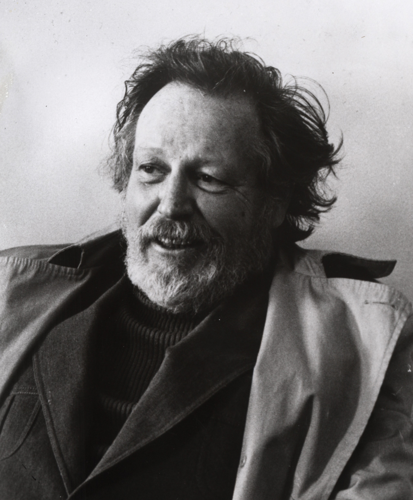

Don Freeman was born in San Diego, California, in 1908. After graduating high school and attending a summer course at San Diego School of Fine Arts, Don moved to New York, where he studied at the Art Students' League and developed a passion for theater. Don spent much of his time on Broadway and could often be found backstage, sketching actors and capturing everything that happened both on and off the stage in his sketchbook. He supported himself by playing his trumpet in a dance band, but after losing his trumpet on the subway Don decided to turn his attention to his sketches.
Don made a name for himself from his successful Broadway sketches and took his first step into children's literature when he was asked to illustrate for William Saroya. He quickly began writing and illustrating his own children's books, including Corduroy, A Pocket for Corduroy, and the C aldecott Honor Book Fly High, Fly Low. He collaborated frequently with his wife, Lydia, a fellow author and artist. Don died in 1978, and his wife went on to establish The Lydia Freeman Charitable Foundation.
